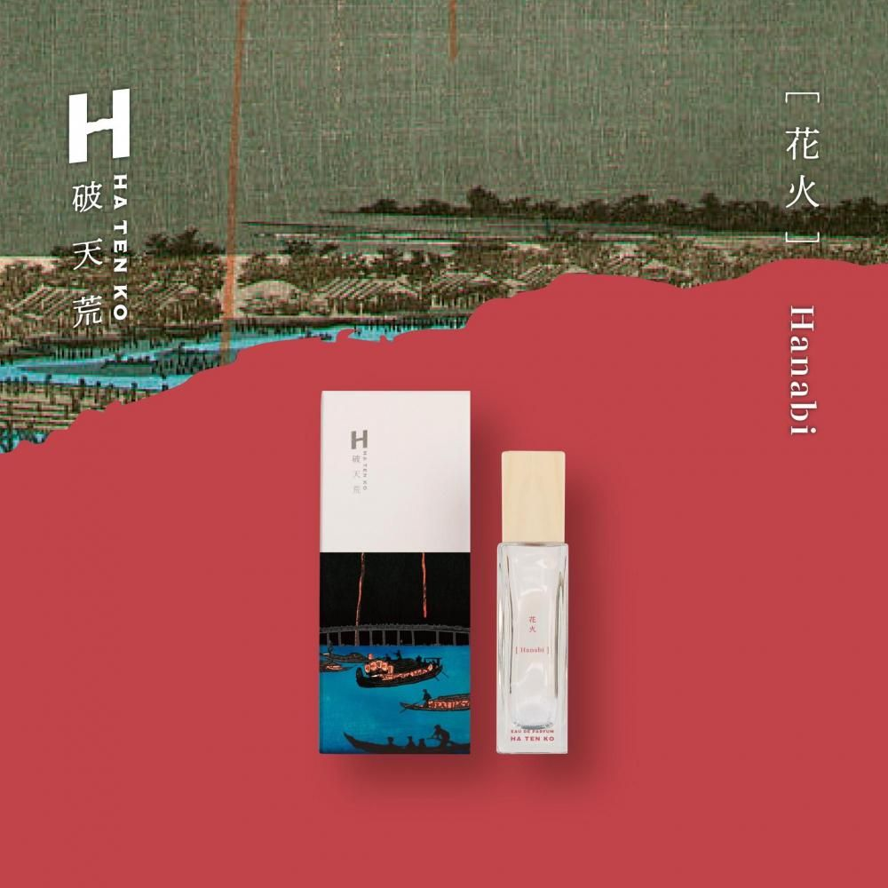

HATENKO / 破天荒
型を破れ。
香りが導く
伝統と革新で型を破る未来

PHILOSOPHY
破天荒とは
既存の枠にとらわれない発想と挑戦を象徴する香り。
木と友禅など異なる領域を結びつけ、日本の伝統文化と職人の技を次世代へ紡ぎながら、新しい価値を生み出します。
PACKAGE STORY
浮世絵を纏う
箱を開けると、浮世絵に包まれた香水瓶が現れます。
かつて浮世絵が輸出陶器の緩衝材として使われていた歴史を背景に、パッケージにもその記憶を重ねています。

CRAFT
加賀友禅 × 東濃檜
異なる素材と技法を重ね、香水瓶に新しい質感を生み出します。


香水瓶の蓋には東濃檜を使い、加賀友禅を使った染め付けを施しています。通常の印刷では出せない質感や味を表現しています。
ボトル底面の全面印刷により、真上から見たときに破天荒のロゴ「H」が浮かび上がる仕組みです。
SCENTS
香りの景色
公式ページで紹介されている香り。
香りが導く、伝統と革新で型を破る未来。
← SHOPへ戻る